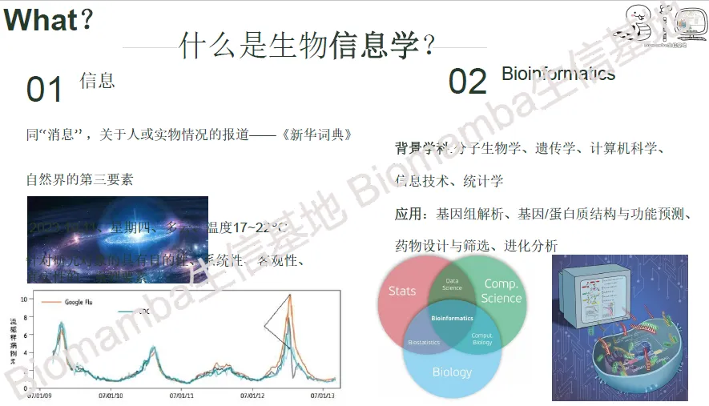
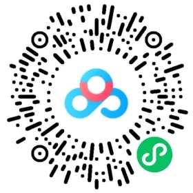

生信小白入门课(4h视频回放)
原文：https://mp.weixin.qq.com/s?__biz=MzAwMzIzOTk5OQ==&mid=2247526459&idx=2&sn=13151661ad9d02bf4d8d20ab000b4df0&chksm=9b3c116bac4b987dc35c1585e3e1482881851e8e789da49aa5dec09da28a874ede17928943f0#rd 合集：生信基地

Biomamba主讲


生信基地已经落地，我们也在积极探索为生信领域做贡献的新方法，希望能够给大家提供系统性、形成性、规范性的生信教学。这已经是我们的第四次线下 活动啦。往期活动 可见合辑：生信基地
此前的几次活动中我们也在不断的总结反馈与经验，期间发现各位来参加活动的老师与同学中很多对生物信息学、高通量测序这些内容的知识背景 并没有基本的了解，这对后面的生信实战学习造成了很大的障碍 。因此Biomamba以此前给硕士生上课的框架(零翘课&double人数旁听)为基础进行修订。给大家完成一次"生信小白入门课 "，为大家进行生物信息学基本概念与常见组学的普及(非实操 ，不要幻想一天可以掌握那么多分析技能，仅提供概论教程 与学习思路 &方法分享)。

时间 ：2025年1月4日(周六) 09:00~17:00(已完成)地点 ：南京市江宁区，详细地址报名咨询~线上线下 均可参加目标 ：生信小白可以通过此次活动了解"什么是 生物信息学？"、"为什么 要学习生物信息学？"、"怎样 学习生物信息学？"主题内容 ：
1、生物信息学&高通量测序
2、(sc)RNA-Seq的前世今生
3、可视化实例
4、蛋白质各级结构及理化性质预测
5、空间转录组学概论
6、生信文章实例讲解
讲义下载 二维码，大家可以扫码自学：


视频回放下载